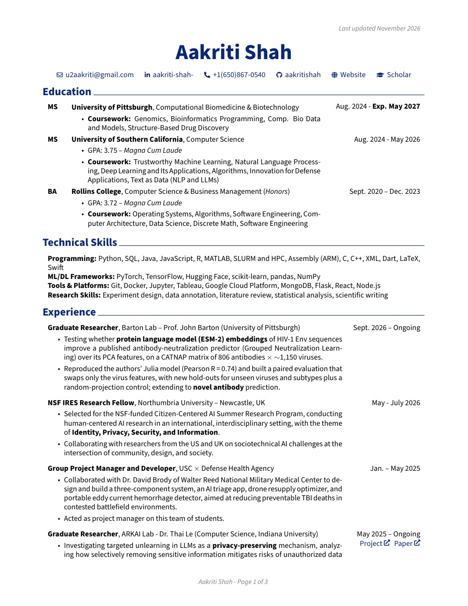
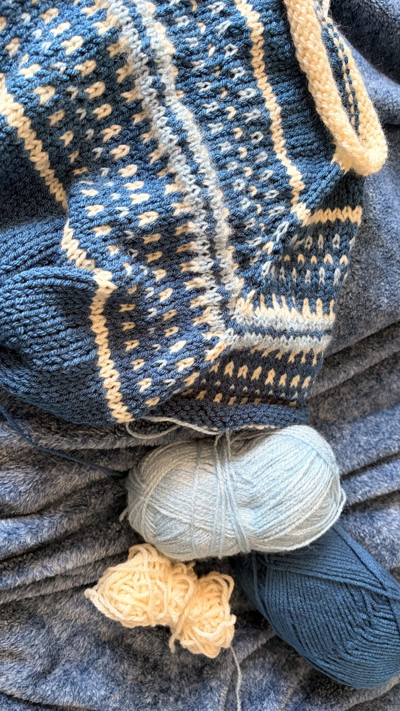
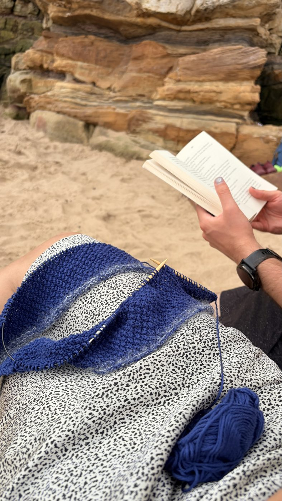
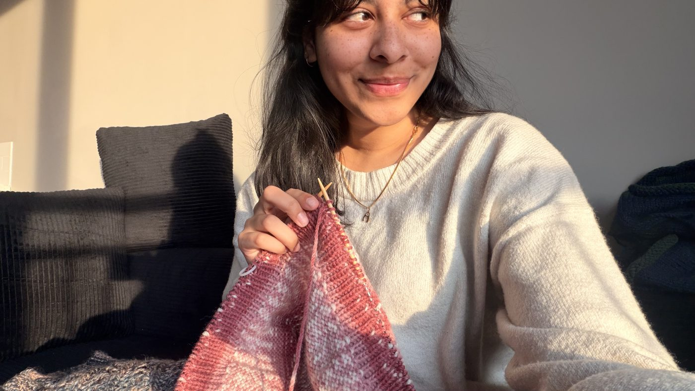
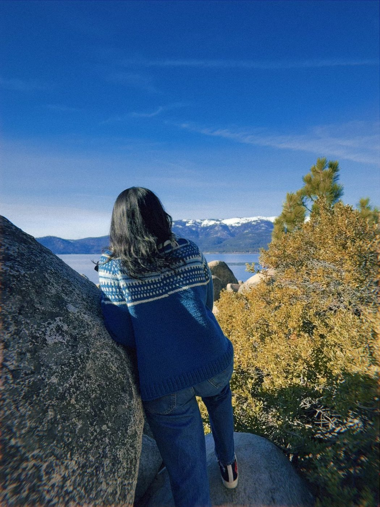
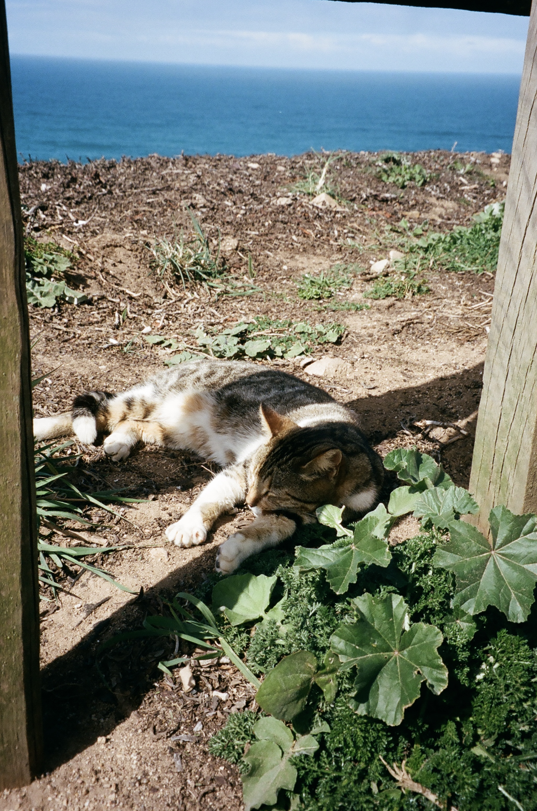
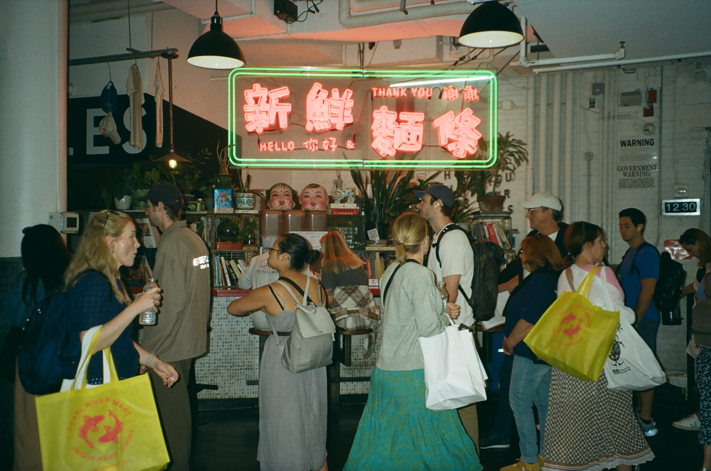

Bio
Hi! I'm a graduate student working on machine learning for healthcare and biomedical data. I recently completed my MS in Computer Science at USC and am finishing an MS in Computational Biomedicine & Biotechnology at the University of Pittsburgh (expected May 2027). I hold a BA in Computer Science and Business Management (Honors) from Rollins College.
My research spans several directions, but they share one goal: approaching technical systems with attention to the people they affect. In healthcare AI, that means building tools for medical imaging and digital pathology (prostate cancer segmentation and grading) and, more recently, genomic and sequence data, such as using protein language models to study viral evolution and antibody neutralization. In privacy and trustworthy ML, it means studying how unlearning in LLMs can protect sensitive information. And in human-centered AI, including my work this past summer at Northumbria University, it means designing with accessibility, identity, and community in mind.

Download CVResearch
-
Protein Language Models for HIV Antibody NeutralizationNew
Testing whether ESM-2 embeddings of HIV-1 Env sequences improve a published antibody-neutralization predictor over its PCA features, on a CATNAP matrix of 806 antibodies × ~1,150 viruses. Reproduced the original model (Pearson R = 0.74) and built a paired evaluation with hold-outs for unseen viruses and subtypes, plus a random-projection control. -
Digital Pathology: Prostate Cancer
Prostate cancer detection through tissue compartment and Gleason pattern segmentation in H&E whole slide images, using UNet, nnUNet, and the UNI foundation model. A new postprocessing step that reincorporates lumen brings the average Dice score to 0.895. Now extending to Gleason pattern grading (patterns 3, 4, 5) to assess cancer aggressiveness. -
Diabetic Retinopathy Detection
Preprocessing (CLAHE, Gaussian blur, MGA-CSG) to improve retinal fundus image quality, targeting poor dataset quality for earlier detection and more robust models. -
AI for Battlefield TBI Care
Project manager and developer on a student team building a three-part system with a Walter Reed clinician: an AI triage app, a drone resupply optimizer, and a portable eddy current hemorrhage detector, aimed at reducing preventable traumatic brain injury deaths. -
Unlearning in LLMs
Targeted unlearning as a privacy-preserving mechanism, using Harry Potter–unlearned Llama-2-7b models. Examines how knowledge entanglement shapes what leaks after unlearning, and tests resistance to adversarial extraction and membership inference. Submitted to EACL 2026. -
Citizen-Centered AI
Human-centered AI research on identity, privacy, security, and information, in an international and interdisciplinary team of US and UK researchers. -
Unlearning Political Information in LLMs
Applied unlearning methods (DPO, refusal tuning, prompting) to Llama-3.1-8B and Mistral-7B, then measured shifts in "political orientation" with political compass and social psychology questionnaires. -
Conversational Hinglish Chatbot
Fine-tuned LLMs for open-domain dialogue using multilingual and synthetic datasets; curated code-switched data, applied instruction-tuning, and evaluated syntactic and semantic quality. -
Evaluating AI Sentiment Analysis
Compared human and LLM sentiment analysis on nonprofit interview data, exploring LLM limits in low-resource and emotionally nuanced settings. -
Adversarial Attacks in Autonomous Driving Systems
Investigated adversarial robustness of ML models for autonomous driving, analyzing transfer learning and robustness across architectures.
Publications & Presentations
- "Automated gleason pattern segmentation in prostate whole slide digitized pathology using foundation model feature embeddings" AUA Annual Meeting 2026 · interactive poster
- "Automated segmentation of gland and stromal morphology on digitized H&E-stained prostate whole slide images" AUA Annual Meeting 2026 · interactive poster
- "Deep-learning-based segmentation of glands and stroma on digitized H&E-stained prostate whole slide images" SPIE Medical Imaging 2026 · oral presentation
- "What the 'Spotless' Mind Remembers: How Knowledge Entanglement Shapes What Leaks After Unlearning in LLMs" (arXiv) Submitted to EACL 2026
- "Evaluating AI Sentiment Analysis" (thesis) Rollins College Honors Program Theses, 2023
Projects
-
Dog Rescue Website: Built a website for a donation-funded dog rescue whose only online presence was a Facebook page, so they could share adoptable dogs and donation needs with their community.
-
voteSmarter: A mobile app connecting users to political candidates based on values, with voter registration, polling locations, and candidate information.
-
ASLearning: A mobile app using real-time object detection to support communication between hearing-impaired and English-speaking users.
CV & Contact
Interests & Hobbies
Beyond research, I enjoy knitting my friends sweaters, sewing new tops, film photography, baking cakes, and growing my vinyl collection. Below are some of my favorites:
Knitting




Film Photography
I love traveling and capturing nature, cityscapes, and animals with my 35mm point-and-shoot cameras (Olympus MJU and Canon Sure Shot Telemax).



Scroll sideways to see more frames.